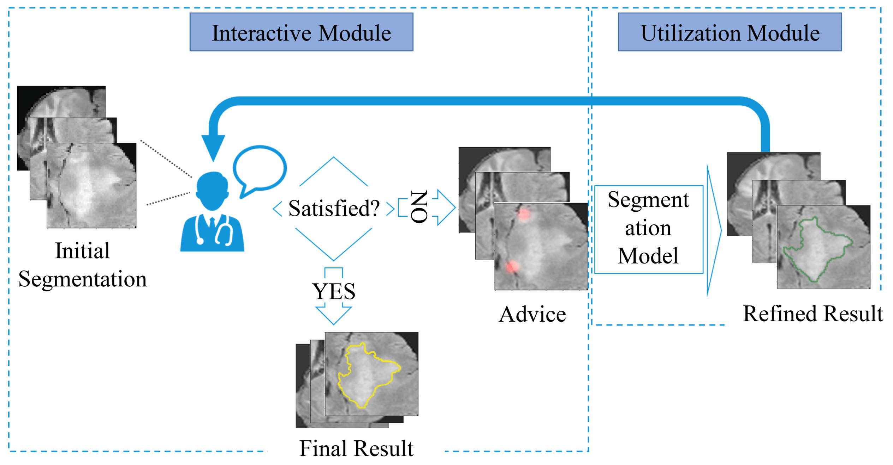
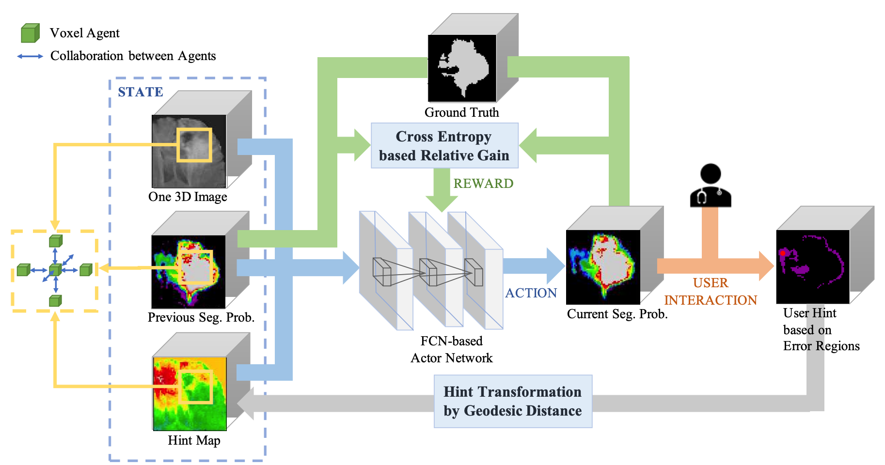
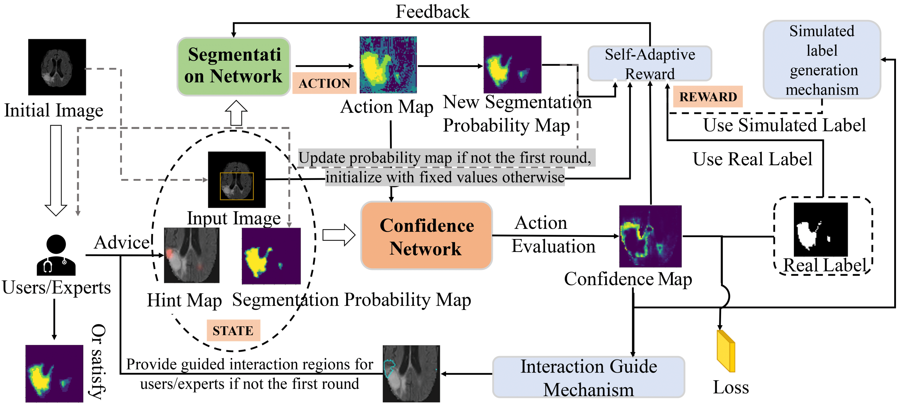
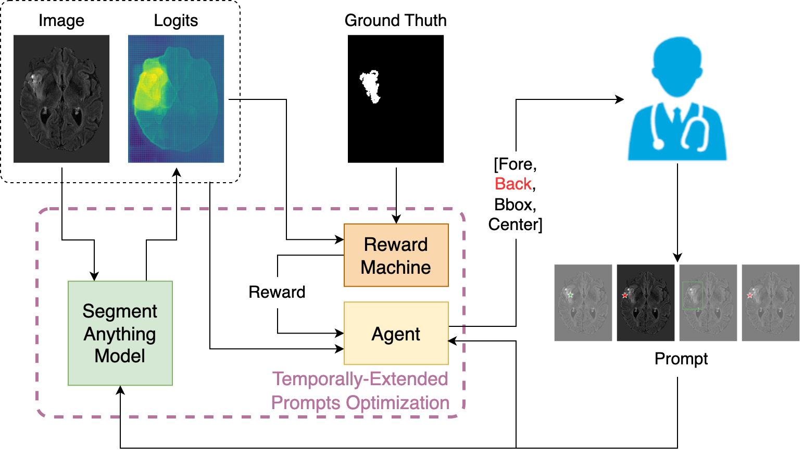

Interactive Medical Image Segmentation is a key aspect of modern healthcare, significantly enhancing diagnostic accuracy and patient care. By providing precise images of anatomical structures and pathological regions, it enables clinicians to make informed decisions about treatment plans. This field also promotes time and cost efficiency through the use of automated tools, facilitating personalized medicine and interdisciplinary collaboration. Ultimately, Interactive Medical Image Segmentation contributes to improved patient outcomes, healthcare quality, and medical research advancements.
The architecture of Interactive Medical Image Segmentation
Existing automatic 3D image segmentation methods usually fail to meet the clinic use. Many studies have explored an interactive strategy to improve the image segmentation performance by iteratively incorporating user hints. However, the dynamic process for successive interactions is largely ignored. We here propose to model the dynamic process of iterative interactive image segmentation as a Markov decision process (MDP) and solve it with reinforcement learning (RL). Unfortunately, it is intractable to use single-agent RL for voxel-wise prediction due to the large exploration space. To reduce the exploration space to a tractable size, we treat each voxel as an agent with a shared voxel-level behavior strategy so that it can be solved with multi-agent reinforcement learning. An additional advantage of this multi-agent model is to capture the dependency among voxels for segmentation task. Meanwhile, to enrich the information of previous segmentations, we reserve the prediction uncertainty in the state space of MDP and derive an adjustment action space leading to a more precise and finer segmentation. In addition, to improve the efficiency of exploration, we design a relative cross-entropy gain-based reward to update the policy in a constrained direction. Experimental results on various medical datasets have shown that our method significantly outperforms existing state-of-the-art methods, with the advantage of fewer interactions and a faster convergence.
This paper proposes a novel interactive medical image segmentation update method called Iteratively-Refined interactive 3D medical image segmentation via Multi-agent Reinforcement Learning (IteR-MRL). We formulate the dynamic process of iterative interactive image segmentation as an MDP. Specifically, at each refinement step, the model needs to decide the labels of all voxels, according to the previous segmentations and supervision information from the interaction. After that, the model will get the feedback according to predefined measurement of segmentation, and the above process will be repeated until the maximum number of interactions is reached. We then adopt the RL methods to solve the MDP above, that is, to find the segmentation strategy to maximize the accumulated rewards received at each refinement step. However, it will be intractable to use singleagent RL for voxel-wise prediction due to the large exploration space. In addition, considering that the voxels in the segmentation task are interdependent, they can achieve better segmentation by a more comprehensive grasp of the surrounding information. To reduce the exploration space to a tractable size and explicitly model the dependencies between voxels, we introduce the multi-agent reinforcement learning (MARL) method.
Overview of Iteratively-Refined interactive 3D medical image segmentation algorithm based on MARL
Table 1: Combination with different initial methods methods
Table 2: Performance improvement in one interactive sequence
The visualization for the relation between predictions and hints. (a) The visualization of one click and its influence on prediction and hint maps. (b) The visualization of prediction and hint map for each step.
@inproceedings{liao2020iteratively,
title={Iteratively-refined interactive 3D medical image segmentation with multi-agent reinforcement learning},
author={Liao, Xuan and Li, Wenhao and Xu, Qisen and Wang, Xiangfeng and Jin, Bo and Zhang, Xiaoyun and Wang, Yanfeng and Zhang, Ya},
booktitle={Proceedings of the IEEE/CVF Conference on Computer Vision and Pattern Recognition (CVPR)},
pages={9394--9402},
year={2020}
}Interactive medical segmentation based on human-in-the-loop machine learning is a novel paradigm that draws on human expert knowledge to assist medical image segmentation. However, existing methods often fall into what we call interactive misunderstanding, the essence of which is the dilemma in trading off short- and long-term interaction information. To better utilize the interactive information at various timescales, we propose an interactive segmentation framework, called interactive MEdical segmentation with self-adaptive Confidence CAlibration (MECCA), which combines action-based confidence learning and multi-agent reinforcement learning. A novel confidence network is learned by predicting the alignment level of the action with the short-term interactive information. A confidence-based reward-shaping mechanism is then proposed to explicitly incorporate confidence in the policy gradient calculation, thus directly correcting the model's interactive misunderstanding. MECCA also enables user-friendly interactions by reducing the interaction intensity and difficulty via label generation and interaction guidance, respectively. Numerical experiments on different segmentation tasks show that MECCA can significantly improve short- and long-term interactive information utilization efficiency with remarkably fewer labeled samples.
The segmentation module outputs actions to change the segmentation probability of each voxel (agent) at each interaction step. Meanwhile, the confidence network estimating the confidence of the actions will generate the self-adaptive reward and simulated label. The confidence map can provide the advice regions of the next interaction step to experts.
Interactive medical image segmentation with self-adaptive confidence calibration
Quantitative comparison of different methods
The performance of different interactive medical segmentation methods and methods with different weighting rewards.
@article{shen2023interactive,
title={Interactive medical image segmentation with self-adaptive confidence calibration},
author={Shen, Chuyun and Li, Wenhao and Xu, Qisen and Hu, Bin and Jin, Bo and Cai, Haibin and Zhu, Fengping and Li, Yuxin and Wang, Xiangfeng},
journal={Frontiers of Information Technology \& Electronic Engineering},
volume={24},
number={9},
pages={1332--1348},
year={2023},
publisher={Springer}
}The Segmentation Anything Model (SAM) has recently emerged as a foundation model for addressing image segmentation. Owing to the intrinsic complexity of medical images and the high annotation cost, the medical image segmentation (MIS) community has been encouraged to investigate SAM's zero-shot capabilities to facilitate automatic annotation. Inspired by the extraordinary accomplishments of the interactive medical image segmentation (IMIS) paradigm, this paper focuses on assessing the potential of SAM's zero-shot capabilities within the IMIS paradigm to amplify its benefits in the MIS domain. Regrettably, we observe that SAM's vulnerability to prompt forms (e.g., points, bounding boxes) becomes notably pronounced in IMIS. This leads us to develop a mechanism that adaptively offers suitable prompt forms for human experts. We refer to the mechanism above as temporally-extended prompts optimization (TEPO) and model it as a Markov decision process, solvable through reinforcement learning. Numerical experiments on the standardized benchmark Brats2020 demonstrate that the learned TEPO agent can further enhance SAM's zero-shot capability in the MIS context.
In an unprecedented discovery, we ascertain that sequential prompt forms constitute the crucial elements influencing the zero-shot performance of SAM in IMIS, subsequently proposing a pertinent temporally-extended prompts optimization problem; By conceptualizing the temporally-extended prompts optimization as an MDP, we employ RL to optimize the sequential selection of prompt forms, thereby enhancing the zero-shot performance of SAM in IMIS； The performance juxtaposition and ablation studies conducted on the standardized benchmark Brats2020 substantiate the efficacy of the TEPO agent in ameliorating SAM's zero-shot capability.
The architecture of our proposed TEPO
Table 1: Action Selection Preferences and Quantitative Segmentation Performance for TEPO Policies and rule-based methods, using consistent labels: "Fore" (forehead point form), "Back" (background point form), "Center" (center point form), and "Bbox" (bounding box form). This table presents a comparative analysis of TEPO-based methods. The highest Dice score for each step is highlighted in bold (Throughout all methods). Results for rule-based methods comparisons are provided in the subsequent table.
The performance improvement of different interactive medical segmentation methods at different interaction steps. All these test results are performed on the Brats2020 dataset.
Visualization of strategies and results of different strategies on the same medical image. The green pentagram indicates the foreground, the red pentagram indicates the background, and the green box indicates the bounding box.
@inproceedings{shen2023temporally,
title={Temporally-Extended Prompts Optimization for SAM in Interactive Medical Image Segmentation},
author={Shen, Chuyun and Li, Wenhao and Zhang, Ya and Wang, Yanfeng and Wang, Xiangfeng},
booktitle={Machine Learning for Biological and Medical Image Big Data Workshop of 2023 IEEE International Conference on Bioinformatics and Biomedicine (BIBM)},
year={2023}
}